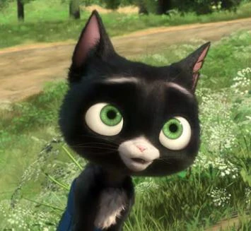
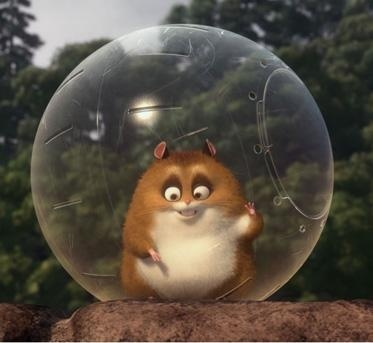

Jhon Travolta
Quien hace de Bolt es actor, cantante y bailarín estadounidense. Ganador del Globo de Oro por Get Shorty y nominado al Óscar por Pulp Fiction y Saturday Night Fever. Bolt fue su primer papel de voz en una película animada. Travolta confesó que aceptó porque quería un proyecto que sus hijos pudieran disfrutar. Junto a Miley Cyrus grabó la canción “I Thought I Lost You”, nominada al Globo de Oro.
Myley Cyrus
Quien hace de Penny es cantante y actriz, conocida mundialmente por la serie de Disney Channel Hannah Montana. Tenía solo 15 años cuando interpretó a Penny. La producción buscaba conectar con el público juvenil y Miley estaba en la cima de su popularidad. Su participación ayudó a que la película atrajera tanto a niños como a adolescentes.

Malcon McDowell
Quien hace de Dr.calico es actor británico, famoso por su papel en A Clockwork Orange. Le dio un aire sofisticado y clásico de villano al antagonista de la serie ficticia de Bolt. Su estilo de voz contrasta con la inocencia del perro protagonista.

Susie Essman
Que hace la voz de Mittens es actriz y comediante, reconocida por Curb Your Enthusiasm. Su tono sarcástico y humorístico dio personalidad única al personaje. En entrevistas dijo que improvisó varias frases que terminaron en la película.

Mark Walton
Que hace la voz de Rhino es animador y artista de guion gráfico de Disney, no era actor profesional. Originalmente hizo la voz en audiciones internas, pero gustó tanto que se quedó con el papel. Su entusiasmo exagerado se convirtió en la marca de Rhino. Es considerado uno de los casos más recordados en Disney de “artista interno que terminó como estrella de doblaje”.